https://chatgpt.com/s/m_6a6327d505d481919c12c67c505cdf79
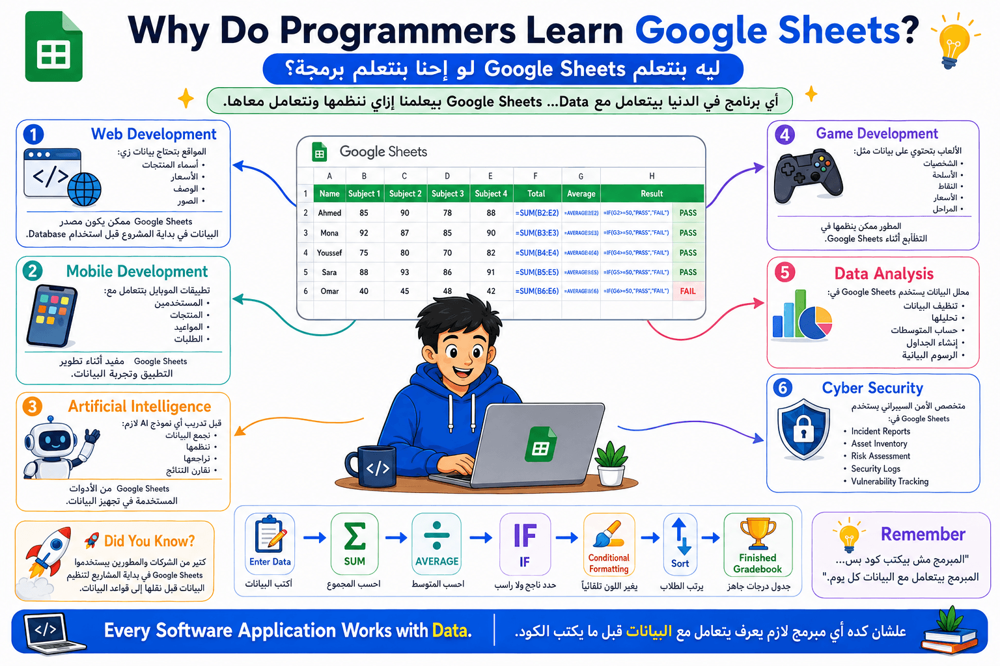
👋
"خلوني أسألكم سؤال...
مين فيكم قبل كده كتب درجاته في كشكول؟
أو عمل قائمة مشتريات مع ماما؟
أو كتب أسماء أصحابه وأرقام تليفوناتهم في ورقة؟
(استنى إجاباتهم)
طيب...
لو القائمة دي بقت فيها 500 اسم...
هتعرفوا تدوروا على اسم معين بسهولة؟
ولو سعر منتج اتغير...
هتقعدوا تغيروه في كل الأماكن بإيديكم؟
ولو عايزين تحسبوا مجموع الدرجات لـ 40 طالب...
هتقعدوا تجمعوا على الآلة الحاسبة؟
أكيد هيكون الموضوع صعب."
🟢
"علشان كده الناس اخترعت حاجة اسمها Spreadsheet.
يعني ورقة إلكترونية.
بدل الورقة والقلم...
بقى عندنا جدول على الكمبيوتر."
(ارسم بإيدك شبكة الصفوف والأعمدة.)
"كل مربع في الجدول بنسميه Cell.
وفي كل Cell أقدر أكتب رقم...
أو كلمة...
أو حتى معادلة."
🟢
"طيب...
فيه برامج كتير بتعمل الجداول دي.
زي Microsoft Excel.
وفيه برنامج تاني اسمه Google Sheets."
(اعرض شعار Google Sheets.)
🟢
"يبقى Google Sheets هو مجرد Spreadsheet...
بس من Google."
🟢
"طب إيه اللي يميزه؟
إنه مجاني.
وبيشتغل من الإنترنت.
وبيحفظ شغلك تلقائي.
وأقدر أفتحه من أي جهاز.
وأقدر أشتغل أنا وصاحبي على نفس الملف في نفس الوقت."
"قبل ما نكمل كنت عاوز أسألكم سؤال."
مين فيكم أول ما شاف Google Sheets قال: إحنا بنتعلم برمجة... إيه علاقة الجداول بالبرمجة؟
(استنى ردودهم)
"والله السؤال ده ممتاز."
"تعالوا نفكر فيها مع بعض."
"لو أنا مبرمج...
أنا شغال بإيه؟
بالبيانات."
كل برنامج في الدنيا بيتعامل مع بيانات.
تطبيق توصيل؟
بيانات.
لعبة؟
بيانات.
موقع؟
بيانات.
تطبيق بنك؟
بيانات.
ذكاء اصطناعي؟
بيانات.
يبقى قبل ما أتعلم أكتب كود...
لازم أعرف أتعامل مع البيانات نفسها.
وده بالضبط اللي Google Sheets بيعلمهولنا."
"Google Sheets مش الهدف منه إنك تبقى موظف بيكتب جداول.
الهدف إنه يعلمك إزاي:
ترتب البيانات.
تحسبها.
تبحث فيها.
تراجعها.
تشاركها.
وتحللها.
ودي مهارات أي مبرمج محتاجها."
"لما تيجي تكتب برنامج...
البرنامج هيستقبل بيانات.
وهيحسب بيانات.
وهيطلع بيانات.
يعني نفس الفكرة اللي بنعملها هنا."
مثال بسيط:
بدل ما Google Sheets يجمع الدرجات باستخدام
SUM()
إنت بعد كام شهر هتكتب بالكود:
total = math + science + english
أو
let total = math + science + english;
يبقى الفكرة واحدة...
الطريقة بس هي اللي اختلفت.
"عارفين ChatGPT؟
قبل ما يتعلم...
كان لازم العلماء يجمعوا ملايين البيانات.
البيانات دي كانوا بينظموها الأول.
وفي شركات كتير بيستخدموا Google Sheets في أول مرحلة قبل تدريب نماذج الذكاء الاصطناعي."
"هستخدمه؟"
الإجابة...
أكتر مما تتخيل.
العميل بعتلك المنتجات.
اسم المنتج.
السعر.
الوصف.
الصورة.
كل ده بيبقى في Google Sheets.
إنت هتقرأ البيانات دي وتحطها في الموقع.
إنت عملت موقع لمدرسة.
كل درجات الطلبة موجودة في Google Sheets.
الموقع يقرأ البيانات منها ويعرضها.
عملت موقع لمطعم.
كل المنيو موجودة في Google Sheets.
أول ما صاحب المطعم يغير السعر...
الموقع يحدث تلقائيًا.
عملت موقع Event.
كل أسماء المشاركين موجودة في Google Sheets.
الموقع يقرأها مباشرة.
هتستخدمه؟
أكيد.
ممكن تخزن:
أسماء المستخدمين.
المنتجات.
الأسعار.
المواعيد.
في Google Sheets أثناء تطوير التطبيق قبل ما تستخدم Database.
هيستخدمه؟
طبعًا.
بيستخدمه في:
تنظيف البيانات.
مراجعة البيانات.
ترتيب البيانات.
مقارنة النتائج.
تسجيل Accuracy.
بيستخدمه؟
أيوه.
بيحط فيه:
أسماء الشخصيات.
الأسلحة.
قوة كل سلاح.
أسعار العناصر.
نقاط اللاعبين.
وبعدين اللعبة تقرأ البيانات.
ده يعتبر من أهم أدواته اليومية.
تقريبًا شغله كله يبدأ بـ Google Sheets أو Excel.
بيستخدمه في:
Logs
Incident Reports
Asset Lists
Risk Assessment
Vulnerability Tracking
"Google Sheets مش مادة منفصلة عن البرمجة."
"هو مجرد وسيلة نتعلم بيها نتعامل مع البيانات (Data)، والبيانات هي قلب أي برنامج هتكتبوه بعد كده."
لو أنا بعمل موقع لبيع الموبايلات...
الموقع هيجيب:
اسم الموبايل
السعر
الصورة
الوصف
منين؟
من الكود؟
ولا من قاعدة بيانات؟
ولا ممكن في البداية من Google Sheets؟
(خليهم يفكروا ويجاوبوا، وبعدها وضح إن Google Sheets ممكن يكون خطوة أولية قبل استخدام قواعد البيانات، وده بيمهد لهم لفهم قواعد البيانات لاحقًا.)
https://chatgpt.com/s/m_6a6321dbf868819195f90c49e63ff6fa
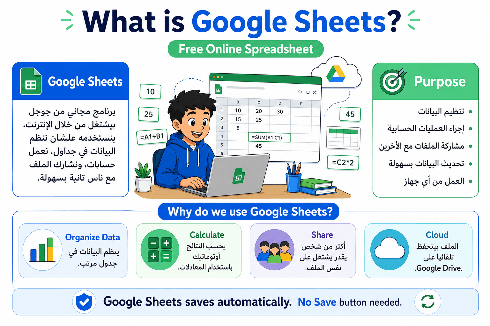
👋 مقدمة السلايد
"قبل ما نبدأ نتكلم عن الإنترنت والويب، هنستخدم أداة مهمة جدًا من أدوات جوجل اسمها Google Sheets. ناس كتير بتفتكر إنها مجرد جدول، لكن الحقيقة إنها أداة قوية جدًا بنستخدمها في الدراسة والشغل وحتى في الحياة اليومية."
"النهارده هنتعلم يعني إيه Google Sheets، وليه ناس كتير حول العالم بتستخدمه بدل البرامج التقليدية، وإزاي نبدأ نشتغل عليه."
الترجمة: جداول بيانات جوجل
الشرح:
تخيل إن عندك كراسة كبيرة بتكتب فيها درجات الطلبة أو مصروف البيت أو أسماء أصحابك.
بدل ما تكون الكراسة ورقية، جوجل عملتها على الإنترنت بحيث تقدر تفتحها من أي جهاز، وتكتب فيها وتحسب الأرقام أوتوماتيك، وكمان تشاركها مع أي شخص.
يعني Google Sheets هو برنامج بيخليك تعمل جداول وتنظم البيانات وتحسبها بسهولة.
🟡 المثال الأول (من الحياة اليومية)
مدرس عنده 30 طالب. بدل ما يحسب درجات كل طالب على الورقة كل مرة، بيكتبها في Google Sheets، وأول ما يغير درجة طالب، المجموع بيتحسب لوحده في ثواني.
🟡 المثال الثاني (تكنولوجيا أو ذكاء اصطناعي)
فريق بيجمع نتائج تجربة ذكاء اصطناعي. كل عضو بيضيف النتائج من جهازه، وكل الفريق بيشوف التحديثات في نفس اللحظة بدون إرسال ملفات لبعض.
➡️ الانتقال
"دلوقتي عرفنا الأداة نفسها، خلينا نشوف هي اتعملت ليه وإيه الهدف منها."
الترجمة: جدول بيانات
الشرح:
جدول البيانات عبارة عن شبكة من صفوف وأعمدة، وكل مربع فيها اسمه خلية.
بنستخدمه علشان نرتب المعلومات ونحسب الأرقام بسهولة بدل الورقة والقلم.
🟡 المثال الأول (من الحياة اليومية)
أنت عامل جدول للمصروف اليومي، وكل صف يمثل يوم، وكل عمود يمثل نوع المصروف، فتقدر تعرف صرفت كام في آخر الشهر.
🟡 المثال الثاني (تكنولوجيا أو ذكاء اصطناعي)
مهندس بيانات بيجمع آلاف الصور المستخدمة لتدريب نموذج ذكاء اصطناعي، وبيكتب اسم كل صورة ونوعها داخل جدول بيانات.
➡️ الانتقال
"طيب بعد ما عرفنا هو إيه، نشوف الهدف من استخدامه."
❓"لو عندك درجات الفصل كله، هتكتبها في ورقة عادية ولا في Google Sheets؟ وليه؟"
https://chatgpt.com/s/m_6a632238754481918fb57e889f1416c3
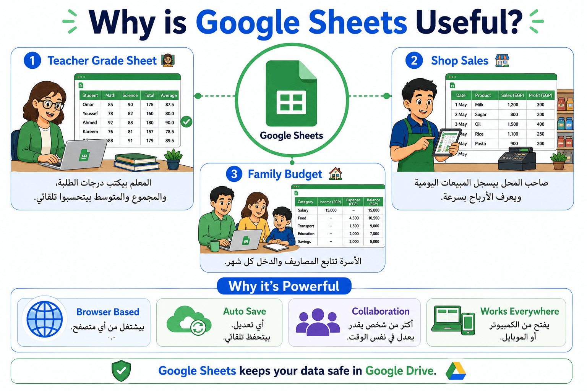
👋 مقدمة السلايد
"دلوقتي عرفنا Google Sheets هو إيه، لكن السؤال المهم... ليه ملايين الناس بيستخدموه كل يوم؟"
"الميزة مش إنه مجرد جدول، لكن لأنه بيساعدنا ننظم المعلومات، ويحسب الأرقام، ويخلي أكتر من شخص يشتغل على نفس الملف في نفس الوقت."
الترجمة: تنظيم المعلومات
الشرح:
أي معلومات كتير لو اتكتبت بشكل عشوائي هتبقى صعبة جدًا نلاقيها.
Google Sheets بيخليك ترتب البيانات في صفوف وأعمدة فتكون واضحة وسهلة.
🟡 المثال الأول (من الحياة اليومية)
أنت بتجهز رحلة للمدرسة، فبتكتب أسماء الطلبة وأرقام تليفونات أولياء الأمور في جدول مرتب بدل ورقة مليانة شخبطة.
🟡 المثال الثاني (تكنولوجيا أو ذكاء اصطناعي)
شركة بتسجل بيانات آلاف المستخدمين داخل جدول علشان تقدر تبحث عن أي شخص بسرعة.
➡️ الانتقال
"بعد التنظيم، ييجي دور الحسابات."
الترجمة: تلقائيًا
الشرح:
يعني الكمبيوتر يعمل الشغل بدل ما تعمله بإيدك.
لو غيرت رقم واحد، كل النتائج المرتبطة بيه تتحدث لوحدها.
🟡 المثال الأول (من الحياة اليومية)
غيرت درجة امتحان واحد من 18 إلى 20، لقيت المجموع النهائي اتغير لوحده من غير آلة حاسبة.
🟡 المثال الثاني (تكنولوجيا أو ذكاء اصطناعي)
بعد إضافة بيانات جديدة، التقرير بيتحدث تلقائيًا ويظهر أحدث النتائج.
➡️ الانتقال
"الميزة اللي بعدها هي المشاركة."
الترجمة: مشاركة
الشرح:
بدل ما تبعت الملف لكل واحد، كل الناس تقدر تفتح نفس الملف وتشتغل عليه.
🟡 المثال الأول (من الحياة اليومية)
أربع طلاب بيعملوا مشروع، وكل واحد بيكتب جزء من جهازه، وكلهم شايفين التعديلات في نفس الوقت.
🟡 المثال الثاني (تكنولوجيا أو ذكاء اصطناعي)
فريق تطوير بيشارك جدول متابعة المشروع، وأي تحديث بيظهر فورًا لكل أعضاء الفريق.
➡️ الانتقال
"وده بيخلينا نفهم ليه Google Sheets قوي جدًا."
❓"لو أربعة من أصحابك بيعملوا مشروع، تفضل كل واحد يبعت نسخة مختلفة، ولا تشتغلوا كلكم على نفس الملف؟"
https://chatgpt.com/s/m_6a632277a7f88191a821fb4c155cb573
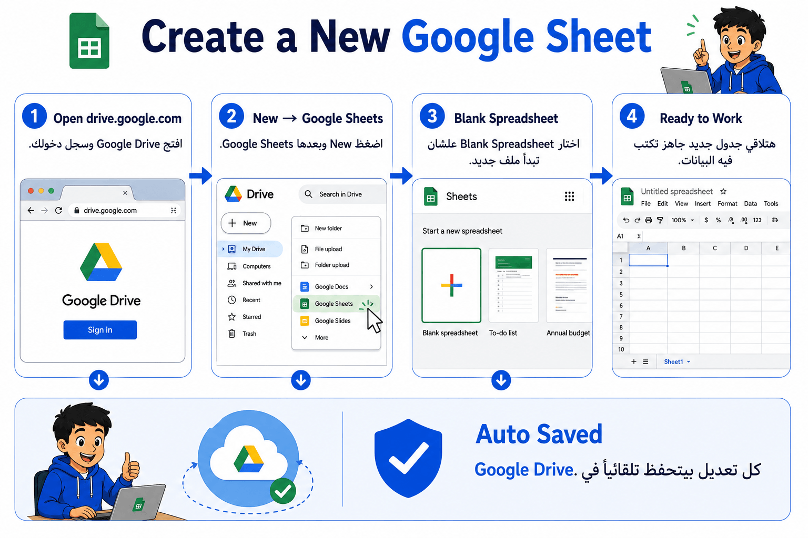
👋 مقدمة السلايد
"دلوقتي بعد ما عرفنا Google Sheets، يلا نشوف إزاي نعمل أول ملف."
"الخطوات بسيطة جدًا، وكلها هتتم من خلال Google Drive."
الترجمة: جوجل درايف
الشرح:
مكان على الإنترنت بتخزن فيه ملفاتك بحيث تقدر تفتحها من أي جهاز بعد تسجيل الدخول.
🟡 المثال الأول (من الحياة اليومية)
عملت واجبك في البيت، وروحت المدرسة وفتحته من كمبيوتر تاني لأنه محفوظ على Google Drive.
🟡 المثال الثاني (تكنولوجيا أو ذكاء اصطناعي)
فريق برمجة بيحفظ ملفات المشروع على Google Drive علشان كل الأعضاء يوصلوا لها بسهولة.
➡️ الانتقال
"بعد الدخول على Drive، نقدر ننشئ ملف جديد."
الترجمة: جدول بيانات فارغ
الشرح:
ملف جديد جاهز تبدأ تكتب فيه أي بيانات من الصفر.
🟡 المثال الأول (من الحياة اليومية)
أول يوم دراسة، بتفتح جدول فاضي علشان تبدأ تسجل درجات الطلبة.
🟡 المثال الثاني (تكنولوجيا أو ذكاء اصطناعي)
بتفتح جدول جديد علشان تجمع نتائج اختبار نموذج ذكاء اصطناعي.
➡️ الانتقال
"بعد إنشاء الملف، هنتعلم إزاي ننظمه."
❓"ليه Google بيحفظ الملف تلقائيًا داخل Google Drive؟"
https://chatgpt.com/s/m_6a632298efec819191155f139805e457
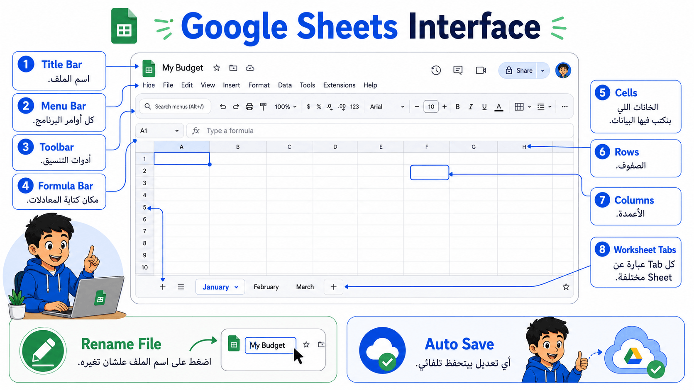
👋 مقدمة السلايد
"آخر حاجة هنتعلمها هي إزاي ننظم ملفاتنا بحيث نقدر نرجع لها بسهولة بعد أسبوع أو شهر."
الترجمة: علامات تبويب أوراق العمل
الشرح:
تخيل عندك كشكول واحد، لكن جواه أكتر من صفحة، كل صفحة لموضوع مختلف.
ده بالضبط اللي بتعمله الـ Worksheet Tabs.
🟡 المثال الأول (من الحياة اليومية)
صفحة للرياضيات، وصفحة للعلوم، وصفحة للحضور، وكلهم داخل نفس الملف.
🟡 المثال الثاني (تكنولوجيا أو ذكاء اصطناعي)
ورقة لبيانات التدريب، وورقة لنتائج الاختبار، وورقة للرسوم البيانية داخل نفس الملف.
➡️ الانتقال
"بعد كده لازم نسمي الملفات بشكل واضح."
الترجمة: إعادة التسمية
الشرح:
بدل ما الملف يفضل اسمه "Untitled"، بنختار اسم واضح علشان نعرفه بسهولة بعدين.
🟡 المثال الأول (من الحياة اليومية)
بدل "Untitled"، تسمي الملف "درجات الصف الأول".
🟡 المثال الثاني (تكنولوجيا أو ذكاء اصطناعي)
تسمي الملف "AI Training Results" بدل اسم عشوائي.
➡️ الانتقال
"آخر ميزة مهمة جدًا هي الحفظ التلقائي."
الترجمة: الحفظ التلقائي
الشرح:
كل تعديل بتعمله بيتحفظ مباشرة، فمش محتاج تضغط زر Save كل شوية.
🟡 المثال الأول (من الحياة اليومية)
وأنت بتكتب الواجب، الكهرباء قطعت، ولما رجعت فتحت الملف لقيت كل شغلك موجود.
🟡 المثال الثاني (تكنولوجيا أو ذكاء اصطناعي)
أثناء إدخال بيانات مشروع، الإنترنت فصل ورجع، ولقيت آخر التعديلات محفوظة تلقائيًا.
➡️ الانتقال
"وبكده بقينا جاهزين نبدأ نستخدم Google Sheets في الأنشطة والتمارين العملية."
❓"إيه فايدة إن ميبقاش فيه زر Save؟ وهل ده ممكن يوفر علينا مشاكل؟"
Google Sheets
│
├── Spreadsheet → جدول بيانات
├── Google Drive → تخزين الملفات
├── Organise Information → تنظيم البيانات
├── Automatic Calculations → حسابات تلقائية
├── Share → مشاركة الملف
├── Worksheet Tabs → أوراق متعددة
├── Rename → إعادة التسمية
└── Auto-save → حفظ تلقائي
https://chatgpt.com/s/m_6a632334d8408191aa5c4526f95f77d5
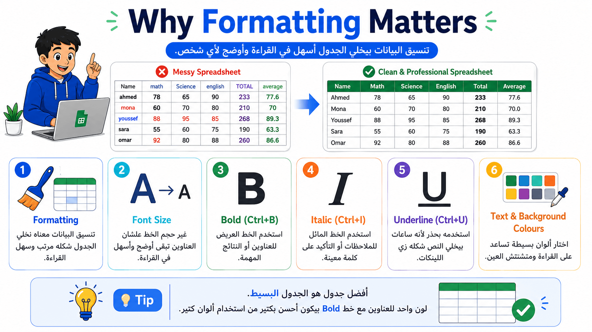
👋 مقدمة السلايد
"لحد دلوقتي عرفنا إزاي نكتب البيانات في Google Sheets، لكن لو سيبناها كلها بنفس الشكل، هتبقى صعبة في القراءة. علشان كده بنستخدم حاجة اسمها Formatting، يعني نخلي الجدول شكله منظم وسهل أي حد يفهمه من أول نظرة."
"تخيلوا إن عندكم جدول درجات فيه 100 طالب، وكل الأرقام بنفس اللون والحجم، هيكون صعب جدًا تلاقوا المجموع أو أسماء الطلبة بسرعة. لكن بمجرد ما نستخدم التنسيق، كل حاجة هتبقى أوضح."
الترجمة: تنسيق
الشرح:
التنسيق هو تغيير شكل البيانات بدون تغيير محتواها. يعني نكبر الخط، نغير اللون، نخلي العنوان Bold أو نلون الخلايا علشان تبقى أسهل في القراءة.
🟡 المثال الأول (من الحياة اليومية)
تخيل إن عندك دفتر، وكل العناوين مكتوبة بنفس شكل باقي الكلام. أكيد هتتعب تدور على أي عنوان. لكن لو كتبت العنوان بخط كبير ولون مختلف هتوصله بسرعة.
🟡 المثال الثاني (تكنولوجيا أو ذكاء اصطناعي)
شركة عندها تقرير فيه آلاف الصفوف، بتستخدم ألوان وخطوط مختلفة علشان المدير يعرف النتائج المهمة في ثواني.
➡️ الانتقال
"أول حاجة في التنسيق هي حجم ونوع الخط."
الترجمة: حجم الخط
الشرح:
بنستخدمه علشان نخلي العناوين أكبر من البيانات العادية فتكون واضحة.
🟡 المثال الأول (من الحياة اليومية)
عنوان جدول المصروفات يكون أكبر من باقي الأرقام.
🟡 المثال الثاني (تكنولوجيا أو ذكاء اصطناعي)
عنوان تقرير نتائج النموذج يكون أكبر من تفاصيل النتائج.
➡️ الانتقال
"بعد كده عندنا أنواع الخط."
الترجمة: خط عريض
الشرح:
بنستخدمه لإبراز أهم المعلومات أو العناوين.
🟡 المثال الأول (من الحياة اليومية)
تخلي كلمة "المجموع النهائي" Bold علشان تظهر بسرعة.
🟡 المثال الثاني (تكنولوجيا أو ذكاء اصطناعي)
تخلي Accuracy الخاصة بالنموذج Bold لأنها أهم رقم في التقرير.
➡️ الانتقال
"بعدها عندنا Italic."
الترجمة: خط مائل
الشرح:
بيستخدم غالبًا للملاحظات أو التعليقات.
🟡 المثال الأول (من الحياة اليومية)
تكتب ملاحظة "الطالب غائب" بخط مائل.
🟡 المثال الثاني (تكنولوجيا أو ذكاء اصطناعي)
تضيف تعليق على تجربة معينة بخط مائل.
➡️ الانتقال
"وبعدها Underline."
الترجمة: تسطير
الشرح:
بيستخدم لتأكيد كلمة معينة، لكن مش بنستخدمه كتير لأنه أحيانًا يشبه الروابط.
🟡 المثال الأول (من الحياة اليومية)
تسطّر تاريخ الامتحان علشان يلفت الانتباه.
🟡 المثال الثاني (تكنولوجيا أو ذكاء اصطناعي)
تحدد اسم ملف مهم داخل تقرير.
➡️ الانتقال
"آخر حاجة في السلايد هي الألوان."
الترجمة: لون النص ولون الخلفية
الشرح:
بنغير لون الكلام أو لون الخلية علشان نميز البيانات المهمة.
🟡 المثال الأول (من الحياة اليومية)
تلون درجات النجاح بالأخضر والرسوب بالأحمر.
🟡 المثال الثاني (تكنولوجيا أو ذكاء اصطناعي)
تلون أعلى Accuracy بالأخضر وأسوأ نتيجة بالأحمر.
➡️ الانتقال
"بعد ما بقينا نعرف ننظم شكل الجدول، هنتعلم ندمج الخلايا ونرتب البيانات."
❓"لو عندك جدول كله بنفس اللون والحجم، هيكون سهل ولا صعب تقرأه؟"
https://chatgpt.com/s/m_6a63244123388191a3825d106e56bc5b
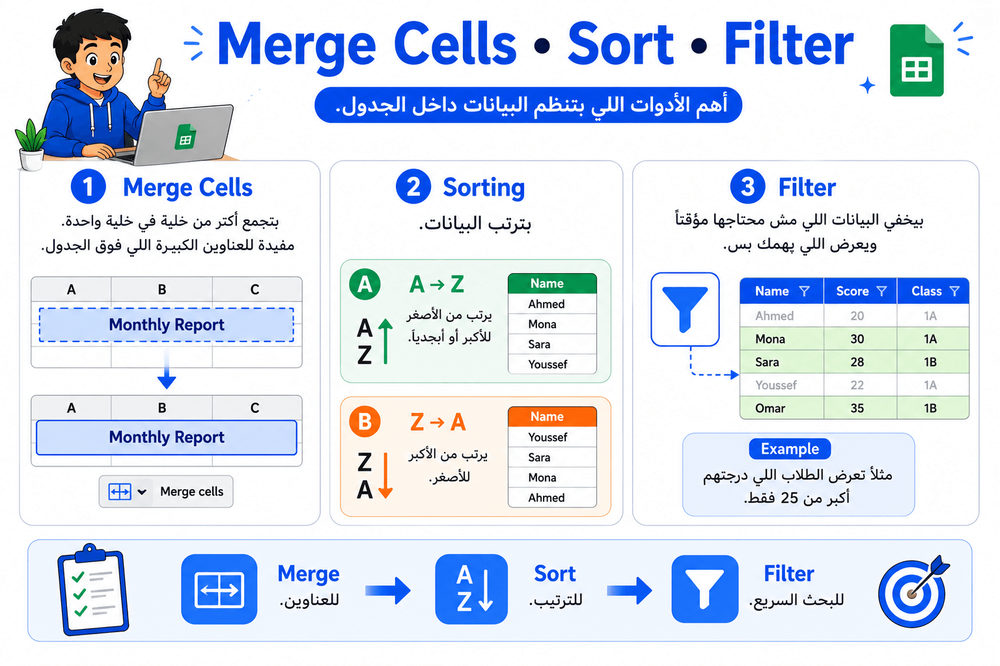
👋 مقدمة السلايد
"أحيانًا بنحتاج نخلي عنوان الجدول في المنتصف، أو نرتب أسماء الطلبة، أو نظهر مجموعة معينة من البيانات فقط. كل ده Google Sheets بيوفره بسهولة."
الترجمة: دمج الخلايا
الشرح:
يعني نجمع أكثر من خلية في خلية واحدة كبيرة، وغالبًا بنستخدمها لعنوان الجدول.
🟡 المثال الأول (من الحياة اليومية)
تعمل عنوان "درجات الصف الأول" في منتصف الجدول باستخدام دمج الخلايا.
🟡 المثال الثاني (تكنولوجيا أو ذكاء اصطناعي)
تضع عنوان "AI Training Results" أعلى التقرير.
➡️ الانتقال
"بعدها هنرتب البيانات."
الترجمة: الفرز
الشرح:
يعني ترتيب البيانات حسب عمود معين.
🟡 المثال الأول (من الحياة اليومية)
ترتب أسماء الطلبة من A إلى Z.
🟡 المثال الثاني (تكنولوجيا أو ذكاء اصطناعي)
ترتب النماذج من أعلى Accuracy إلى أقل Accuracy.
➡️ الانتقال
"طيب لو عايزين نظهر بيانات معينة بس؟"
الترجمة: تصفية
الشرح:
بيخفي البيانات اللي مش محتاجينها مؤقتًا ويعرض المطلوب فقط.
🟡 المثال الأول (من الحياة اليومية)
تعرض الطلبة اللي درجاتهم أكبر من 25 فقط.
🟡 المثال الثاني (تكنولوجيا أو ذكاء اصطناعي)
تعرض الصور الخاصة بفئة "Cats" فقط من آلاف الصور.
➡️ الانتقال
"بعد كده هنبدأ ندخل في أهم ميزة في Google Sheets وهي المعادلات."
❓"لو عندك 500 طالب وعايز تشوف الناجحين فقط، هتدور عليهم واحد واحد ولا تستخدم Filter؟"
https://chatgpt.com/s/m_6a6324aff7d48191b8f085099af5af81
👋 مقدمة السلايد
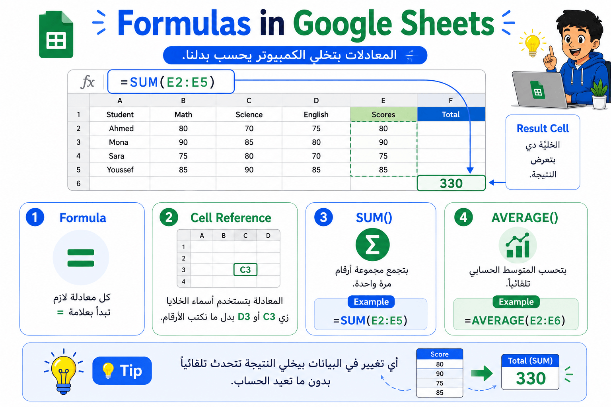
"لحد دلوقتي كنا بنرتب البيانات، لكن دلوقتي هنخلي Google Sheets يحسب بدلنا."
الترجمة: معادلة
الشرح:
المعادلة هي أمر بنكتبه علشان البرنامج يعمل عملية حسابية.
كل معادلة لازم تبدأ بعلامة =.
🟡 المثال الأول (من الحياة اليومية)
بدل ما تجمع درجات أربع مواد بإيدك، تكتب معادلة واحدة والمجموع يظهر تلقائيًا.
🟡 المثال الثاني (تكنولوجيا أو ذكاء اصطناعي)
تجمع نتائج عدة اختبارات لنموذج AI في خلية واحدة.
➡️ الانتقال
"أحيانًا بدل ما نجمع خلية خلية، بنستخدم Function جاهزة."
الترجمة: دالة الجمع
الشرح:
بتجمع مجموعة خلايا مرة واحدة.
🟡 المثال الأول (من الحياة اليومية)
=SUM(E2:E5) تجمع درجات أربع مواد مباشرة.
🟡 المثال الثاني (تكنولوجيا أو ذكاء اصطناعي)
تجمع عدد الصور المستخدمة في التدريب.
➡️ الانتقال
"وفي دالة تانية بتحسب المتوسط."
الترجمة: دالة المتوسط
الشرح:
بتحسب متوسط مجموعة من الأرقام.
🟡 المثال الأول (من الحياة اليومية)
تحسب متوسط درجات الطالب في كل المواد.
🟡 المثال الثاني (تكنولوجيا أو ذكاء اصطناعي)
تحسب متوسط دقة عدة نماذج مختلفة.
➡️ الانتقال
"بعد كده هنخلي الجدول ياخد قرار بنفسه باستخدام IF."
❓"إيه أسهل: تجمع خمس درجات بنفسك ولا تستخدم SUM؟"
https://chatgpt.com/s/m_6a63250bd11081919ae2296af8c20df4
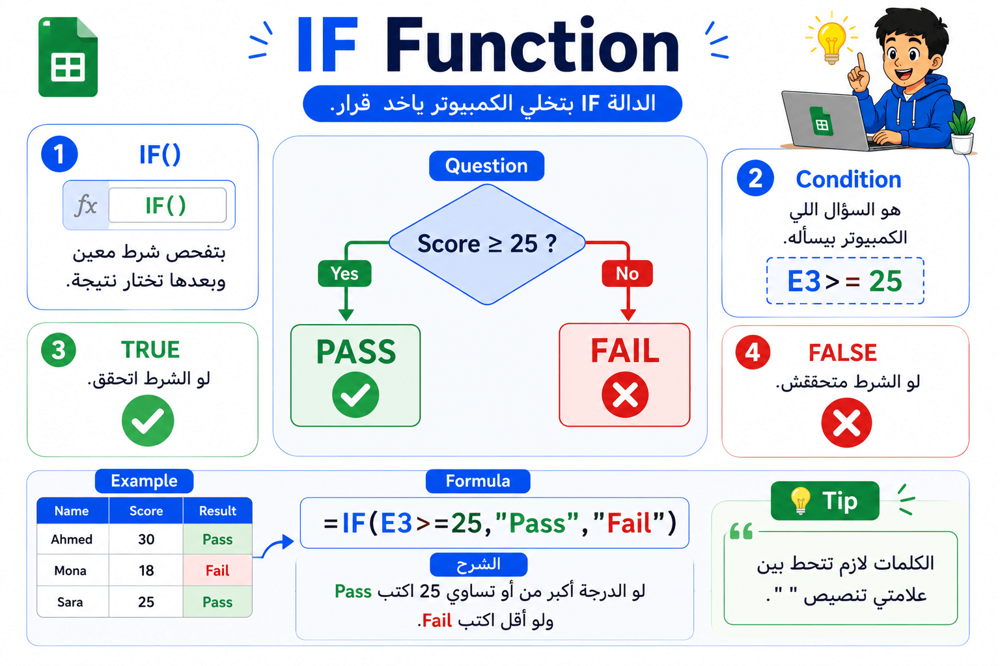
👋 مقدمة السلايد
"آخر حاجة النهارده هي واحدة من أذكى الدوال في Google Sheets، وهي IF."
"الميزة دي بتخلي الجدول يفكر بشكل بسيط ويقرر بناءً على شرط."
الترجمة: دالة IF
الشرح:
هي دالة بتسأل سؤال.
لو الشرط صح، تعمل حاجة.
ولو الشرط غلط، تعمل حاجة تانية.
🟡 المثال الأول (من الحياة اليومية)
لو درجة الطالب 25 أو أكتر، يكتب "Pass"، ولو أقل يكتب "Fail" تلقائيًا، بدون ما المدرس يكتب النتيجة لكل طالب.
🟡 المثال الثاني (تكنولوجيا أو ذكاء اصطناعي)
لو دقة نموذج الذكاء الاصطناعي أكبر من 90%، يكتب "Excellent"، ولو أقل يكتب "Needs Improvement" تلقائيًا.
➡️ الانتقال
"وبكده بقينا نعرف نخلي Google Sheets مش بس يحسب، لكن كمان ياخد قرارات بسيطة."
الترجمة: الشرط المنطقي
الشرح:
هو السؤال اللي بنسأله داخل IF، زي: هل الدرجة أكبر من أو تساوي 25؟
🟡 المثال الأول (من الحياة اليومية)
هل الطالب نجح؟
🟡 المثال الثاني (تكنولوجيا أو ذكاء اصطناعي)
هل Accuracy أكبر من 95%؟
➡️ الانتقال
"آخر حاجة لازم نفتكرها إن النصوص داخل IF لازم تتحط بين علامتي اقتباس."
❓"لو الدرجة 30، هتظهر Pass ولا Fail؟ ولو الدرجة 20؟"
Google Sheets Features
│
├── Formatting → تنسيق البيانات
│ ├── Bold
│ ├── Italic
│ ├── Underline
│ └── Colors
│
├── Merge Cells → دمج الخلايا
├── Sorting → فرز البيانات
├── Filter → تصفية البيانات
│
├── Formula → معادلات
│ ├── SUM()
│ └── AVERAGE()
│
└── IF Function
├── Logical Expression
├── True Result
└── False Result
https://chatgpt.com/s/m_6a63259afa2c8191bd199f4e1f4a952f
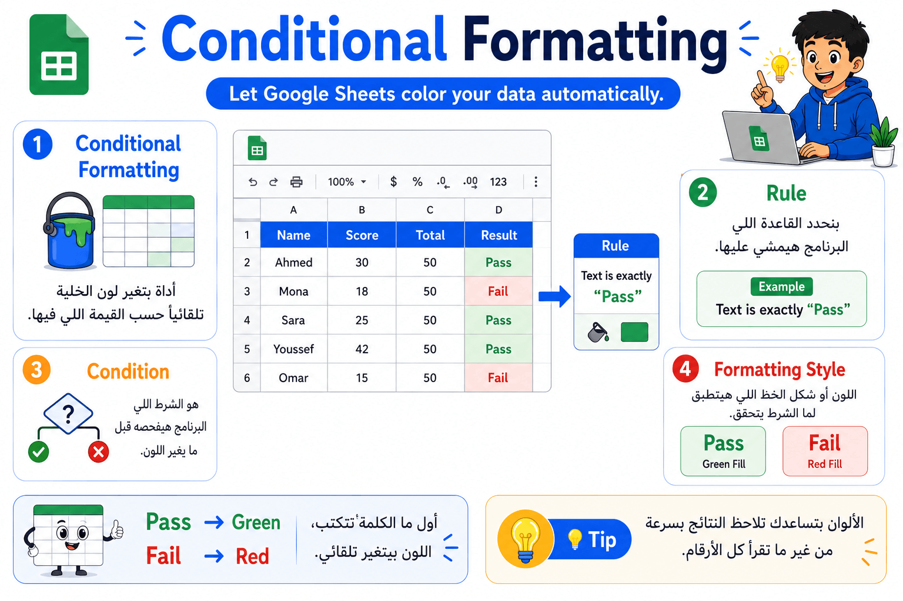
🎤 Speaker Notes🟢 بصوا يا شباب، تخيلوا معايا إن عندكم جدول فيه 200 طالب.
هل هتقعدوا تقروا كل الدرجات واحدة واحدة علشان تعرفوا مين نجح ومين سقط؟
أكيد لأ.
علشان كده Google Sheets فيه ميزة اسمها Conditional Formatting.
الميزة دي بتخلي البرنامج يغير لون الخلية لوحده حسب شرط إحنا بنحدده.
يعني لو الكلمة "Pass" يخليها أخضر.
ولو "Fail" يخليها أحمر.
بدل ما عينك تدور وسط الأرقام، اللون هيقولك النتيجة في ثانية.
وده نفس المبدأ اللي بنشوفه في إشارات المرور.
الأخضر معناه تمام.
الأحمر معناه فيه مشكلة.
يبقى الألوان أوقات بتوصل المعلومة أسرع من الأرقام نفسها.
الترجمة: التنسيق الشرطي
تخيل إن مامتك عاملة جدول مذاكرة.
كل مادة خلصتها تلونها أخضر.
ولو مادة متذاكرتش تبقى أحمر.
أنت مش محتاج تقرأ الجدول كله...
مجرد الألوان هتعرف حالتك.
ده بالضبط اللي بيعمله Google Sheets.
أب بيكتب مصروف أولاده.
لو المصروف أكبر من الحد المسموح، الخلية تتحول أحمر فورًا.
في كشف درجات المدرسة.
كل الطلاب الناجحين لونهم أخضر.
والراسبين لونهم أحمر.
المدرس يعرف النتيجة بمجرد النظر.
الترجمة: القاعدة
هي التعليمات اللي بتقول للبرنامج:
"لو حصل الشرط ده... اعمل التنسيق ده."
الترجمة: الشرط
هو الاختبار اللي البرنامج بيعمله.
زي:
هل الكلمة Pass؟
هل الرقم أكبر من 50؟
الترجمة: شكل التنسيق
هو التغيير اللي هيحصل بعد تحقق الشرط.
لون...
خط...
خلفية...
حجم.
لو عندي درجات من 100...
إيه أحسن لون للنجاح؟
وإيه أحسن لون للرسوب؟
https://chatgpt.com/s/m_6a6325f1f79481919f8561b26e7fa8e0
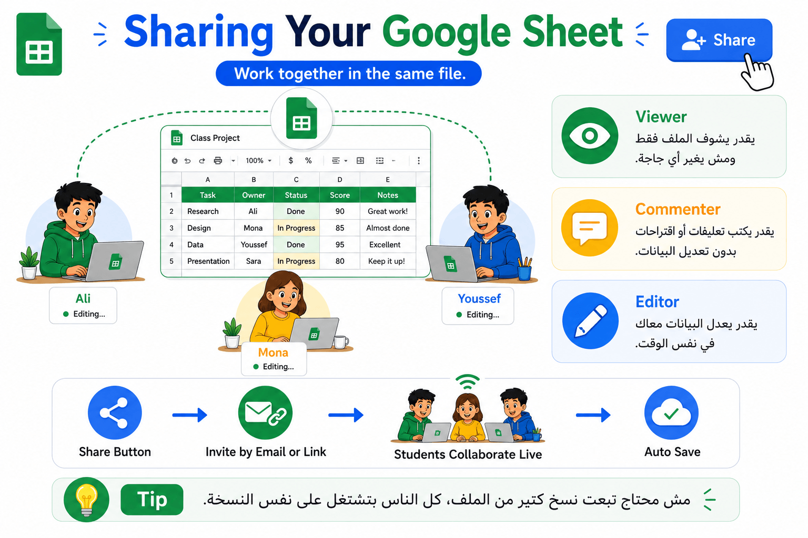
🟢 دلوقتي إحنا عملنا ملف جميل...
طب لو عايز أبعته لزميلي؟
هل كل شوية أبعته نسخة جديدة؟
لأ.
Google Sheets معمول علشان الناس تشتغل على نفس الملف في نفس الوقت.
بندوس Share.
وبعدين نحدد الشخص يقدر يعمل إيه.
ممكن يتفرج بس.
ممكن يكتب تعليق.
أو يعدل معايا مباشرة.
وده بيسهل شغل الفرق جدًا.
الترجمة: مشاركة
يعني تبعت الملف لحد تاني بدون ما تبعت نسخة جديدة.
الكل بيشتغل على نفس الملف.
طالبين بيعملوا مشروع.
كل واحد بيضيف جزءه.
شركة فيها فريق مبيعات.
كل الموظفين بيسجلوا المبيعات في نفس الملف.
الترجمة: عرض فقط
الشخص يشوف الملف لكن ميقدرش يغير حاجة.
الترجمة: تعليق
يكتب ملاحظات واقتراحات بدون تعديل البيانات.
الترجمة: تعديل
الشخص يقدر يغير ويضيف ويحذف البيانات.
لو أنا بدي الملف لمديري...
أفضل أخليه:
View؟
ولا Edit؟
وليه؟
https://chatgpt.com/s/m_6a632648f8d48191aee939c80749ce05
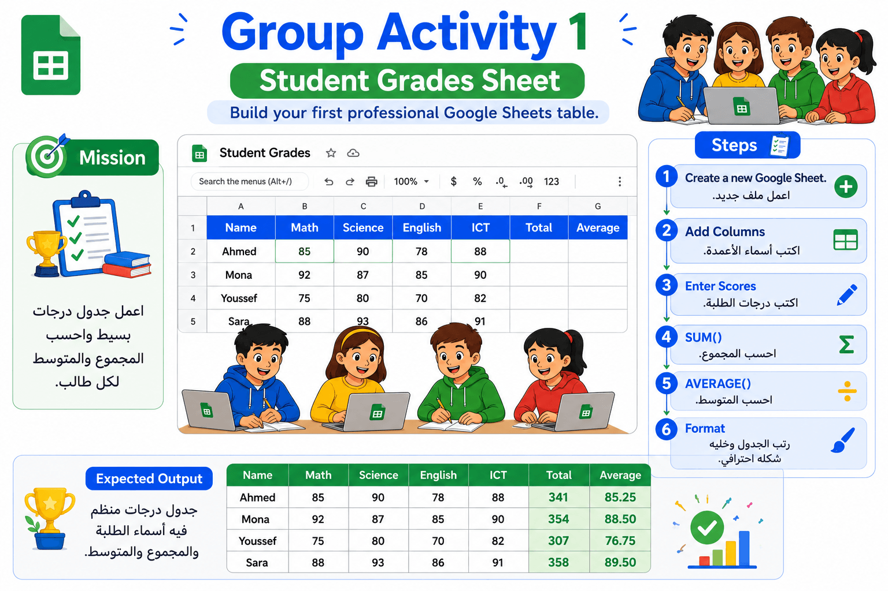
🟢 دلوقتي هنطبق كل اللي اتعلمناه بإيدينا.
كل مجموعة هتعمل ملف درجات بسيط.
هنبدأ بورقة جديدة.
نسميها.
نضيف أسماء الطلاب.
والمواد.
وبعدين نحسب المجموع والمتوسط باستخدام الدوال اللي خدناها.
بعد كده هننسق الجدول بحيث يبقى شكله احترافي وسهل القراءة.
في الآخر كل مجموعة تعرض النتيجة.
مش الهدف إنكم تخلصوا بسرعة...
الهدف إن كل واحد يجرب بنفسه.
Objective
إن الطلاب يطبقوا:
إنشاء Sheet
إدخال البيانات
SUM
AVERAGE
التنسيق
Teacher Role
متابعة كل مجموعة.
التأكد إن كل طالب استخدم الدوال بنفسه.
مساعدة الطلاب عند ظهور أخطاء.
Student Role
كل مجموعة تعمل ملف درجات كامل.
Grouping
3–4 طلاب.
Suggested Time
15 دقيقة.
Create a new Google Sheet.
Rename it.
Add columns:
Name
Subject 1
Subject 2
Subject 3
Total
Average
Enter several students.
Calculate Total using SUM.
Calculate Average using AVERAGE.
Format the table.
| Name | Math | Science | English | Total | Average |
| Ali | 20 | 18 | 19 | 57 | 19 |
| Sara | 24 | 25 | 23 | 72 | 24 |
| Omar | 17 | 21 | 20 | 58 | 19.3 |
Total
=SUM(B2:D2)
Average
=AVERAGE(B2:D2)
Google Sheets
│
├── Data Entry
├── SUM
├── AVERAGE
├── Formatting
└── Review
إذا أردت، اكتب "التالي" وسأكمل الجزء الثاني وفيه Group Activity 2 مع:
Speaker Notes
Teacher Instructions
Student Instructions
Model Solution
Tree Summary
Image Production Prompt.
https://chatgpt.com/s/m_6a632703413c8191857595c3185bafd1
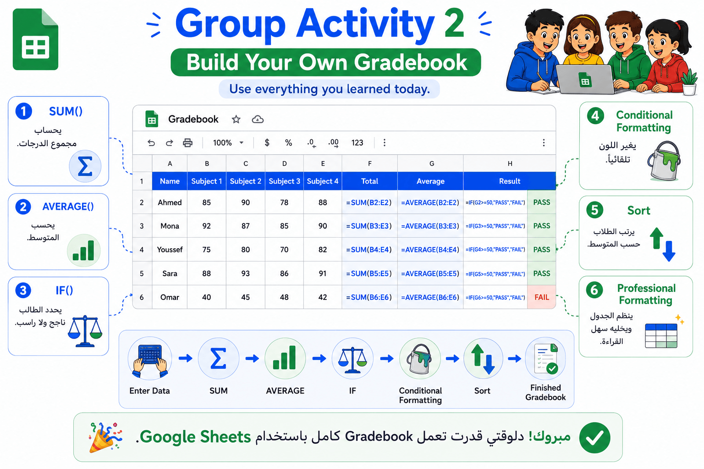
🟢 دلوقتي هنعمل مشروع صغير يجمع تقريبًا كل اللي اتعلمناه النهارده.
في النشاط الأول كنا بنحسب المجموع والمتوسط فقط.
أما النشاط ده، فهنبني Gradebook كامل زي اللي بيستخدمه المدرسين.
هنكتب أسماء الطلاب ودرجاتهم.
بعدها هنحسب Total باستخدام SUM.
ثم Average باستخدام AVERAGE.
بعدها هنستخدم IF علشان البرنامج يحدد لو الطالب Pass أو Fail من غير ما نكتبها بإيدينا.
وبعدين هنستخدم Conditional Formatting علشان النجاح يظهر بالأخضر، والرسوب بالأحمر تلقائيًا.
وفي النهاية هنرتب الطلاب حسب المتوسط بحيث أعلى طالب يظهر في الأول.
في الآخر هيكون عندكم ملف احترافي فيه معظم الأدوات اللي اتعلمناها النهارده.
الترجمة: سجل الدرجات
تخيل إنك مدرس عنده 40 طالب.
بدل ما يحتفظ بدرجاتهم في ورق كتير، بيعمل جدول واحد فيه كل البيانات.
الجدول ده اسمه Gradebook.
فيه أسماء الطلاب، درجاتهم، المجموع، المتوسط، وحالة النجاح أو الرسوب.
مدرس بيخلص الامتحان، يدخل درجات كل الطلاب مرة واحدة، والجدول يحسب كل حاجة تلقائيًا.
مدرس في مدرسة أونلاين بيستخدم Google Sheets علشان كل المعلمين يدخلوا الدرجات في نفس الملف، والنتائج تتحدث مباشرة.
➡️ الانتقال
"بعد ما بقينا عارفين يعني إيه Gradebook، هنبدأ نحسب المجموع."
SUM
الترجمة: دالة الجمع
بدل ما تجمع خمس درجات بإيدك، Google Sheets هيجمعهم في ثانية واحدة.
طالب درجاته:
20 + 18 + 25 + 22
SUM هيحسبهم فورًا.
شركة عندها مبيعات كل شهر.
SUM تجمع مبيعات السنة كلها بضغطة واحدة.
➡️ الانتقال
"بعد المجموع هنحسب المتوسط."
الترجمة: دالة المتوسط
بعد ما عرفنا مجموع الدرجات، محتاجين نعرف متوسط أداء الطالب.
وده اللي بتعمله AVERAGE.
طالب درجاته
20
18
22
24
تحسب متوسطهم تلقائيًا.
شركة تقارن متوسط مبيعات الفروع المختلفة.
➡️ الانتقال
"بعد كده البرنامج هيقرر الطالب نجح ولا لأ."
الترجمة: دالة IF
دي الدالة اللي بتخلي Google Sheets ياخد قرار.
لو الشرط اتحقق يكتب حاجة.
ولو متحققش يكتب حاجة تانية.
لو المتوسط أكبر من أو يساوي 25
يكتب Pass.
غير كده يكتب Fail.
في شركة:
لو نسبة إنجاز الموظف أكبر من 90%
يكتب Excellent.
➡️ الانتقال
"بعد ما البرنامج قرر، هنخلي اللون يظهر تلقائي."
الترجمة: التنسيق الشرطي
هو اللي بيغير لون الخلية حسب القيمة الموجودة فيها.
يعني Pass أخضر.
Fail أحمر.
بدون أي تدخل منك.
في كشف درجات المدرسة، كل الناجحين يظهروا بالأخضر بمجرد إدخال النتيجة.
في لوحة متابعة مبيعات، الأرقام العالية تظهر بالأخضر والمنخفضة بالأحمر تلقائيًا.
➡️ الانتقال
"آخر خطوة هي ترتيب الطلاب."
الترجمة: فرز
يعني إعادة ترتيب البيانات حسب قيمة معينة.
زي ترتيب الطلاب من أعلى متوسط لأقل متوسط.
ترتيب الطلاب حسب أعلى الدرجات.
ترتيب المنتجات حسب أعلى مبيعات.
❓لو عندنا 30 طالب، والمدرس غير درجة طالب واحد فقط...
هل هيحتاج يحسب المجموع والمتوسط والنجاح لكل الطلاب من جديد؟
ولا Google Sheets هيحدثهم تلقائيًا؟
تطبيق جميع المهارات التي تعلمها الطلاب في درس Google Sheets داخل مشروع عملي واحد.
متابعة كل مجموعة أثناء التنفيذ.
مراجعة صحة المعادلات.
التأكد من استخدام:
SUM
AVERAGE
IF
Conditional Formatting
Sorting
يبني Gradebook كامل ويختبر جميع الدوال بنفسه.
3–4 Students
20–25 Minutes
لا تعطِ الطلاب المعادلات مباشرة.
اطلب منهم التفكير أولًا.
ساعد فقط عند الحاجة.
بعد انتهاء كل مجموعة اطلب منهم مقارنة النتائج مع مجموعة أخرى.
Create a new Google Sheet.
Rename it.
Add columns:
Name
Subject 1
Subject 2
Subject 3
Subject 4
Total
Average
Result
Enter students' scores.
Calculate Total using SUM.
Calculate Average using AVERAGE.
Use IF to display Pass or Fail.
Apply Conditional Formatting:
Pass → Green
Fail → Red
Sort students by Average (highest first).
Format the table professionally.
| Name | Math | Science | English | ICT | Total | Average | Result |
| Ali | 28 | 26 | 30 | 27 | 111 | 27.75 | Pass |
| Sara | 20 | 18 | 22 | 21 | 81 | 20.25 | Fail |
| Omar | 30 | 29 | 28 | 27 | 114 | 28.5 | Pass |
=SUM(B2:E2)
=AVERAGE(B2:E2)
=IF(G2>=25,"Pass","Fail")
Pass → Green Fill
Fail → Red Fill
Sort by Average → Largest to Smallest.
Google Sheets Gradebook
│
├── Enter Data
│
├── SUM
│ └── Total Marks
│
├── AVERAGE
│ └── Average Score
│
├── IF
│ ├── Pass
│ └── Fail
│
├── Conditional Formatting
│ ├── Green = Pass
│ └── Red = Fail
│
├── Sort
│ └── Highest Average First
│
└── Professional Formatting
https://chatgpt.com/s/m_6a63290a99c08191b214e2dba7901bc6
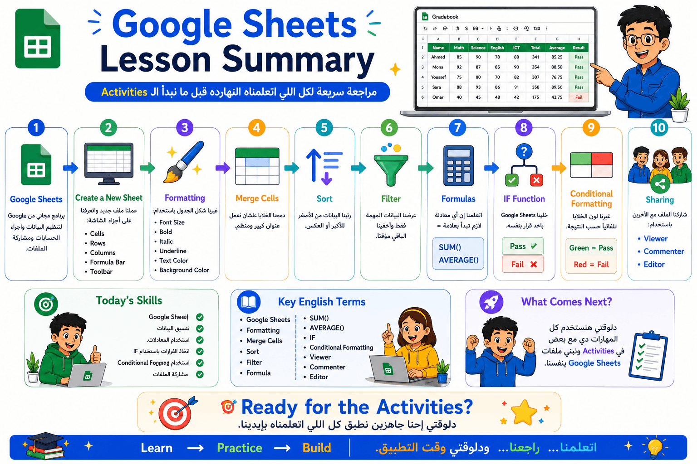
👋 مراجعة سريعة
"قبل ما نبدأ الـ Activities، تعالوا نفتكر مع بعض إحنا اتعلمنا إيه النهارده."
🟢 أول حاجة عرفنا يعني إيه Google Sheets.
هو برنامج مجاني من Google بنستخدمه لتنظيم البيانات، وإجراء الحسابات، ومشاركة الملفات مع الآخرين، وكل شغلنا بيتحفظ تلقائي على Google Drive.
🟢 بعد كده اتعلمنا إزاي ننشئ ملف جديد.
عرفنا إزاي نفتح Google Drive، ونعمل Google Sheet جديدة، ونتعرف على أجزاء الشاشة زي:
Cells
Rows
Columns
Formula Bar
Toolbar
🟢 بعدها بدأنا ننظم شكل الجدول باستخدام Formatting.
اتعلمنا نغير:
Font Size
Bold
Italic
Underline
Text Color
Background Color
علشان الجدول يبقى مرتب وسهل القراءة.
🟢 بعد كده عرفنا أدوات بتنظم البيانات.
Merge Cells لدمج الخلايا.
Sort لترتيب البيانات.
Filter لإظهار البيانات اللي محتاجينها فقط.
🟢 وبعدين دخلنا على أهم جزء... المعادلات (Formulas).
عرفنا إن أي معادلة لازم تبدأ بعلامة =.
واتعلمنا:
SUM() لحساب المجموع.
AVERAGE() لحساب المتوسط.
🟢 بعدها استخدمنا IF Function.
ودي خلت Google Sheets ياخد قرار بنفسه.
مثلاً:
لو الدرجة أكبر من أو تساوي 25 → Pass
ولو أقل → Fail
🟢 بعد كده استخدمنا Conditional Formatting.
وخليّنا البرنامج يغير لون الخلية تلقائيًا.
Pass → أخضر 🟢
Fail → أحمر 🔴
وده خلّى قراءة النتائج أسرع وأسهل.
🟢 وفي الآخر عرفنا إزاي نشارك الملف مع الآخرين.
واتعلمنا الفرق بين:
Viewer → يشوف فقط.
Commenter → يضيف تعليقات.
Editor → يقدر يعدل على الملف.
وده بيسمح لأكتر من شخص يشتغلوا على نفس الملف في نفس الوقت.
"يعني النهارده قدرنا نعمل رحلة كاملة داخل Google Sheets."
بدأنا من إنشاء ملف جديد، وبعدها كتبنا البيانات، ونظمنا شكلها، واستخدمنا المعادلات، وخليّنا البرنامج ياخد قرارات، ويغير الألوان تلقائيًا، وفي النهاية عرفنا إزاي نشارك شغلنا مع الآخرين.
دلوقتي بقى جه وقت التطبيق.
الـ Activities اللي هنحلها دلوقتي هتخلينا نستخدم تقريبًا كل المهارات دي مع بعض، وكأننا بنشتغل على مشروع حقيقي.
❓"لو أنا اديتك جدول درجات فاضي، إيه أول خطوة هتعملها؟"
(اسمح للطلاب يجاوبوا، ووجّههم للإجابة المتوقعة: إدخال البيانات → تنسيق الجدول → استخدام SUM وAVERAGE → IF → Conditional Formatting → مشاركة الملف إذا لزم الأمر.)
ده بيساعدهم يراجعوا تسلسل الخطوات كله قبل ما يبدأوا النشاط العملي.